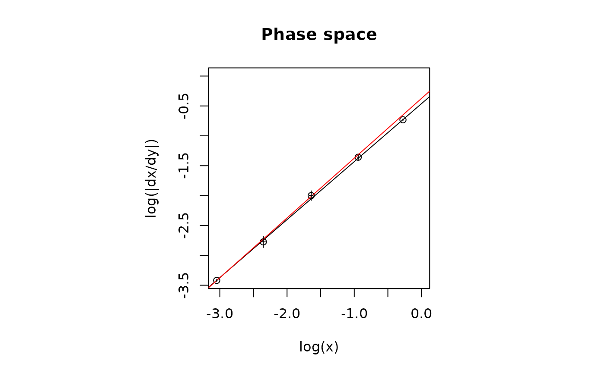
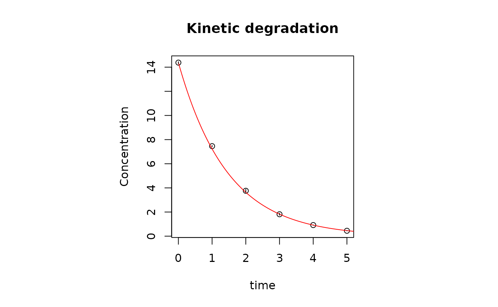
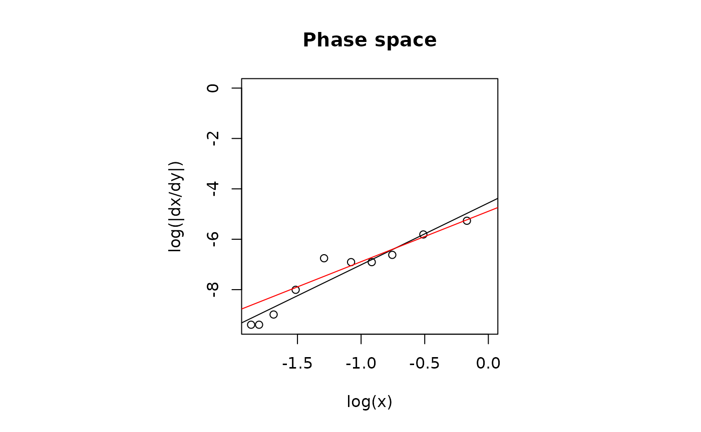
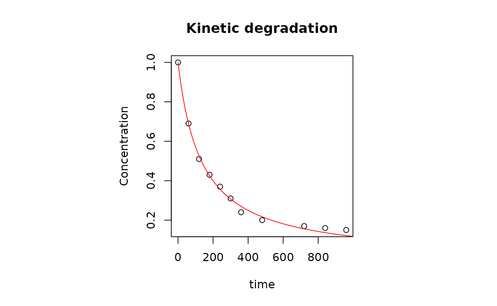
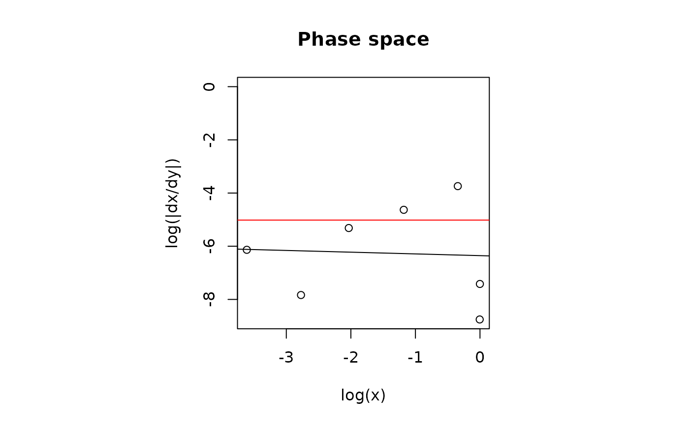
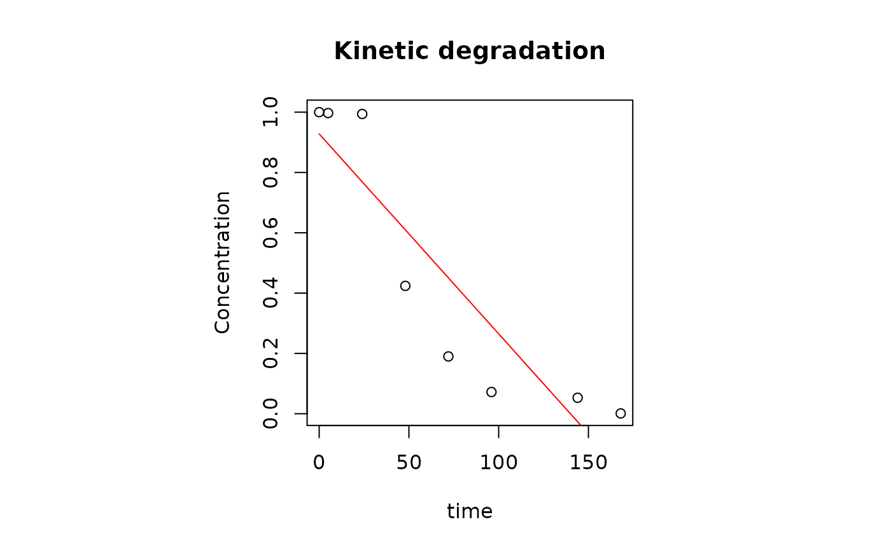
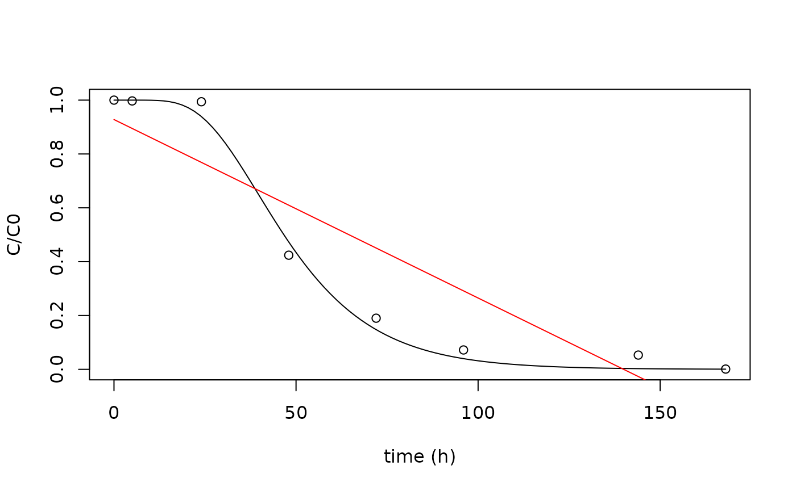

Abstract
The present vignette provides basic information for the correct use of the package chemdeg, a package thought to support the analysis of chemical degradation kinetics experiments. The vignette is structured as follows: in the “Introduction” section the principles behind the mathematical approach will be explained; in “Package usage” section the main functions of the package are described and their outputs are shown; the “Examples” section shows the generic workflow of the program using data that have benn made available with the package and explains how to correctly use and interpret the results of the functions.Introduction
A key aspect in food science is the prediction of the change of food
quality in time, and thus a quantitative analysis of the shelf life of
foods and of their components is of paramount importance.
chemdeg is a package developed to assist food chemists in
the objective selection of degradation kinetic models of foods and
parameters estimation. The software implements a two-step method to this
purpose. First, experimental data are analyzed in the so-called phase
space which allows for the estimation of the order of the reaction; then
the data are fitted with the appropriate standard kinetic model to
estimate the reaction rate. The whole procedure is driven by rigorous
statistical analyses of the results. The package also provides a routine
to fit a non-standard kinetic degradation model named first-order
multi-target model (FOMT).
The standard degradation kinetics of food and of their components are described within the following differential equation which formalizes the mass-action law: \[\frac{d y}{d t}=-k\,y^n \tag{1} \] where \(y\) is the concentration of the reactant (i.e. the concentration of the degrading food molecule), \(t\) is the time, \(k\) is the rate constant and \(n\) is the order of reaction. The order \(n\) can assume either integer (e.g. 0,1,2…) or fractional values as it may observed for complex degradation reactions like overall multistage reaction composed by single reactions with different reaction orders.
A logarithmic transformation of the eq.(1) yields: \[ \log{|\frac{d y}{d t}}|=\log{k}+n\,\log{y}\] where \(\log{}\) is the natural logarithm.
A plot of \(\log{|\frac{dy}{dt}|}\) versus \(\log{y}\) defines the phase space of the dynamical system, and standard nth reaction order kinetic models are here represented as straight lines with slope equal to \(n\) and intercept equal to the logarithm of \(k\). Derivatives are calculated with the central finite difference method.
The slope can be easily determined by linear regression (weighted on experimental error if available) of log-transformed data. Both known and unknown uncertainties can affect this estimation. Thus a first decision about the appropriate order of the reaction is taken by the program on the basis of the following four criteria:
- if the 95% confidence interval of \(n\) includes one or more integer numbers, then the best estimate of the reaction order is that integer number or the integer which is closest to the mean estimate of \(n\);
- if the 95% confidence interval of \(n\) does not include integer numbers than the order of the reaction is considered fractional and equal to its best estimate;
- if the estimated order \(n\) is not statistically significant but the intercept is significant, then the most likely order of reaction is 0;
- if neither the estimates of the slope and the intercept are statistically significant then a different modeling approach must be considered. The package provides a possible non-linear alternative model (FOMT, see other model section)
The general solution of eq.(1) is: \[ y(t)=\begin{cases} ((n-1)\,k\,t+y_0^{1-n}))^{\frac{1}{n-1}} & \text{if $n\ne 0$} \\ y_0\,e^{-k\,t} & \text{if $n=0$} \end{cases} \] Once the reaction order has been determined, non-linear least squares regression can be performed using the above solution with the rate constant \(k\) as free parameter.
Package usage
The function det_order() performs all in one the
analysis described in the Introduction
section. The input of the function must be an at least two-columns
data-frame with time data in the first column and concentration in the
second column. The values of experimental error can be given in the
optional third column. Different input types or data-frames with less
than two or more than 3 columns will return an error. The output of the
function is an ord_res class object.
ord1 # simulated data from a first order kinetic model with error
#> t concentration std.error
#> 1 0 14.3786746 0.077039565
#> 2 1 7.4582106 0.059189631
#> 3 2 3.7612821 0.129590803
#> 4 3 1.8158076 0.083778548
#> 5 4 0.9189166 0.005502180
#> 6 5 0.4479939 0.006840325
res <- det_order(ord1)
#> Reaction order estimated: 1
class(res)
#> [1] "ord_res"The function results() shows a comprehensive summary of
the results. These include:
- the results of linear regression performed in the phase space, the estimate of n and its confidence interval;
- a comment about the conclusion that can be drawn from the phase space analysis;
- the results of the regression performed on experimental data in the conventional concentration vs. time space with the solution of eq.(1), the estimate of the rate constant and its confidence interval;
- goodness-of-fit statistics of the final fit (see next section)
results(res)
#>
#> Linear regression in the phase space:
#> log(dx/dt)= 0.97 log(x) + ( -0.46 )
#>
#> Estimate of n:
#>
#> Estimate Std. Error t value Pr(>|t|)
#> 9.701806e-01 4.235714e-03 2.290477e+02 1.835114e-07
#>
#> Confidence interval of n:
#> 2.5 % 97.5 %
#> 0.9567007 0.9836605
#>
#> Statistical analysis indicates that an order 1 degradation kineitc model is likely to describe the data.
#> The null hypothesis H0:
#> "The process is described by an order 1kinetic model"
#> cannot be rejected.
#>
#> Non-linear least squares regression was performed with an order 1 kinetic model:
#>
#> Estimate of k:
#> Estimate Std. Error t value Pr(>|t|)
#> k 0.6878765 0.002626997 261.8489 1.541636e-11
#> Waiting for profiling to be done...
#> Confidence interval of k:
#> 2.5% 97.5%
#> 0.6812276 0.6947116
#>
#> Goodness-of-fit:
#> Value
#> AIC: -11.933893
#> AICc: -10.933893
#> BIC: -12.350374
#> RMSE: 2.002812
#> Chi-sq_red: 5.379602
#> -----------------------------------------------------The function plot_ord() allows the graphical
visualization of the results obtained with the whole analysis. Function
automatically plots the experimental error when provided. In these
plots, black lines show the best regression curve, whereas green lines
show the fits with the reaction order chosen according to the criteria
given in the previous section.
plot_ord(res)
The functions phase_space() and kin_regr()
allow to retrieve the linear regression from the phase space and the
regression with the selected model, respectively:
linear_model_phase_space <- phase_space(res)
linear_model_phase_space
#>
#> Call:
#> stats::lm(formula = log_dx_dt ~ log_x, data = ldframe, weights = 1/ldframe$err_log^2)
#>
#> Coefficients:
#> (Intercept) log_x
#> -0.4618 0.9702
kinetic_regression <- kin_regr(res)
kinetic_regression
#> Nonlinear regression model
#> model: y ~ y0 * exp(-k * t)
#> data: list(t = dframe[[1]], y = dframe[[2]], y0 = y0, err = err)
#> k
#> 0.6879
#> weighted residual sum-of-squares: 20.06
#>
#> Number of iterations to convergence: 3
#> Achieved convergence tolerance: 4.421e-08Goodness-of-fit measures
Goodness-of-fit statistics include functions that are already
accessible in the package stats, like: Bayesian Information
Criterion (stats::BIC()), Akaike’s Information Criterion
(stats::AIC()) and Root Mean Square Error
(stats::sigma()).
In the package chemdeg two more measures are introduced,
which are the reduced chi-squared (\(\chi^2_{red}=\chi^2/df\), where \(df\) are the degrees of freedom) and the
Akaike’s Information Criterion AICc corrected for finite samples. The
values of both statistics are accessible with the functions
chiquad_red() and AICC(), respectively.
chiquad_red(kinetic_regression)
#> [1] 5.379602
AICC(kinetic_regression)
#> [1] -10.93389The whole statistics can be accessed through the
goodness_of_fit()function.
goodness_of_fit(kinetic_regression)
#> Value
#> AIC: -11.933893
#> AICc: -10.933893
#> BIC: -12.350374
#> RMSE: 2.002812
#> Chi-sq_red: 5.379602Other functions
To generate a formula object containing the formula of
an nth kinetic reaction model, the function
f_gen(n) can be called, by giving n as input.
Other Models
First-Order Multi-Target model (FOMT)
The FOMT model is equivalent to the Single-Hit Multi-Target model (SHMT), a model developed in the field of radiation biology to describe the fraction of cell surviving radiation treatments. In radio-biology the problem is to calculate the probability of cell survival to a dose D of radiation whereas in the present context the probability that molecules survive within a given time interval. In both cases, the assumption is that the events that hit a cell or, as in this case, a food sample are random and they occur at a constant mean rate \(k\) and independently of the time since the last event (the hits, therefore, follow the Poisson distribution). If a sample is composed of sub-units and at least m of them must be inactivated by at least one hit, the overall survival probability is given by the equation:
\[\frac{Y(t)}{Y_0}=1-(1-e^{-k\,t})^n \] More information on model development can be found in this work.
In chemdeg the FOMT model can be fitted by calling
FOMT() function, giving as input a data-frame with time,
concentration and error (optional) in the first three columns.
The output is an nls class object and thus all the
functions from package stats can be used to retrieve
regression information. Even in this case the goodness-of-fit can be
accessed through the goodness_of_fit() function.
The non-linear fit with the FOMT model is quite sensitive to the
initial value of the parameters and this is particularly true for the
exponent m. The FOMT() function implements a
routine for the automatic selection of the approximate initial values of
model parameters which is based on the analysis of actual experimental
data (see par_est_FOMT()). However, if FOMT()
fails to converge, it is possible to input manually the initial
parameter values using the function FOMTm() as RHS of the
formula in the stats::nls() function:
dat <- data.frame(
time = c(0, 1, 2, 3, 4, 5),
conc = c(1, 0.99, 0.98, 0.5, 0.24, 0.12)
)
try(FOMT(dat))
#> Error in numericDeriv(form[[3L]], names(ind), env, central = nDcentral) :
#> Missing value or an infinity produced when evaluating the model
nls(conc ~ FOMTm(time, k, n),
data = list(
conc = dat$conc,
time = dat$time
),
start = list(k = 1, n = 12)
)
#> Nonlinear regression model
#> model: conc ~ FOMTm(time, k, n)
#> data: list(conc = dat$conc, time = dat$time)
#> k n
#> 1.147 24.433
#> residual sum-of-squares: 0.00772
#>
#> Number of iterations to convergence: 8
#> Achieved convergence tolerance: 6.697e-06Examples
Generic workflow
chemdeg package contains some simulated and actual
experimental data that can be used for training purposes.
urfa
#> time_min AA_55 AA_65 AA_75
#> 1 0 1.00 1.00 1.00
#> 2 60 0.69 0.56 0.39
#> 3 120 0.51 0.45 0.23
#> 4 180 0.43 0.37 0.19
#> 5 240 0.37 0.29 0.17
#> 6 300 0.31 0.25 0.14
#> 7 360 0.24 0.21 0.11
#> 8 480 0.20 0.16 0.09
#> 9 720 0.17 0.12 0.08
#> 10 840 0.16 0.10 0.08
#> 11 960 0.15 0.10 0.07The urfa data concern the normalized degradation
kinetics of ascorbic acid in Urfa peppers dehydrated with hot air at 55,
65 and 75°C (Dağhan et al., 2018). urfa returns a
data-frame with 4 columns. The first is time and the following are the
degradation data measured at different temperatures. Data in this format
are not readable from the det_order() function (see Package usage):
The data-frame must be transformed into a data-frame with two columns (or three if the experimental error is available), the first containing the time data and the second the measured concentration of the compound (note that the data must not be necessarily normalized with respect to the concentration of the molecule at time 0):
try(det_order(urfa))
#> Error in det_order(urfa) :
#> Error: the number of columns provided does not match the
#> requirements. Only dataframe with 2 columns (time,data)
#> and 3 columns (time,data,error) are accepted
urfa1 <- data.frame(urfa$time_min, urfa$AA_55)
ord.urfa.1 <- det_order(urfa1)
#> Reaction order estimated: 2The function returns a message which informs the user about the best
ordinary model that can explain the data, an order 2 degradation kinetic
model in this case. the function results() provides more
information:
results(ord.urfa.1)
#>
#> Linear regression in the phase space:
#> log(dx/dt)= 2.45 log(x) + ( -4.56 )
#>
#> Estimate of n:
#>
#> Estimate Std. Error t value Pr(>|t|)
#> 2.454865e+00 2.571281e-01 9.547245e+00 1.198314e-05
#>
#> Confidence interval of n:
#> 2.5 % 97.5 %
#> 1.861927 3.047804
#>
#> Statistical analysis indicates that an order 2 degradation kineitc model is likely to describe the data.
#> The null hypothesis H0:
#> "The process is described by an order 2kinetic model"
#> cannot be rejected.
#>
#> Non-linear least squares regression was performed with an order 2 kinetic model:
#>
#> Estimate of k:
#> Estimate Std. Error t value Pr(>|t|)
#> k 0.007517079 0.0002185557 34.39434 1.022054e-11
#> Waiting for profiling to be done...
#> Confidence interval of k:
#> 2.5% 97.5%
#> 0.007047215 0.008026010
#>
#> Goodness-of-fit:
#> Value
#> AIC: -54.4227221
#> AICc: -53.9782777
#> BIC: -53.6269316
#> RMSE: 0.0178302
#> Chi-sq_red: NA
#> NB: Reduced Chi-squared is not calculated with unweighted data
#> -----------------------------------------------------first it returns the estimate of the order n along with its
confidence interval. We remind that the algorithm automatically chooses
the integer value (if present within the confidence interval) that is
the nearest to the estimate of n. For example, if the estimate
is 1.6 and the CI is 0.8-2.4, the value taken would be 2. This might
nonetheless be not the right value. For example the scientific
literature or any precious information might suggest that a reaction
model of order equal to 1 (which is inside the CI) could explain the
data. In this case both alternative models should be used to fit the
data and the results compared. The results() function,
however, returns an explanation why a certain value of n was
chosen.
Once the order of reaction is estimated to be 2 non-linear regression of the data with the appropriate model is performed and the estimated value of the rate constant is k and of its confidence interval is given. Finally, goodness-of-fit statistics are showed for non-linear regressions (note that this holds for reaction orders \(\ne 0\)).
A call to the function plot_ord() allows to visualize
the results:
plot_ord(ord.urfa.1)
the plot on the left side represents the phase space of the system. On the right side, the kinetic data are plotted together with the model’s regression curve.
The results show that a 2nd-order degradation model best explains the data. The following example, however, shows that it is not always possible to proceed straightforwardly as in the present case and that caution is recommended before drawing conclusions about the appropriate degradation kinetic model that best fit experimental data.
FOMT example
In this case we load data fomtdata from the package,
that concerns the degradation kinetics of a 1.2 mM solution of
5-caffeoylquinic acid (5-CQA) in the presence of 1.2 mM ascorbic acid
(Yusaku and Kuniyo, 2013).
fomtdata
#> time_h tCQA_AA
#> 1 0 1.000
#> 2 5 0.997
#> 3 24 0.994
#> 4 48 0.424
#> 5 72 0.190
#> 6 96 0.072
#> 7 144 0.053
#> 8 168 0.001In this case the data are ready to be passed to the
det_order() function:
ord.cqa <- det_order(fomtdata)
#> Reaction order estimated: 0Indeed, the results are:
results(ord.cqa)
#>
#> Linear regression in the phase space:
#> log(dx/dt)= -0.07 log(x) + ( -6.35 )
#>
#> Estimate of n:
#>
#> Estimate Std. Error t value Pr(>|t|)
#> -0.06502888 0.57024177 -0.11403739 0.91364577
#>
#> Confidence interval of n:
#> 2.5 % 97.5 %
#> -1.530882 1.400824
#>
#> Estimate of the intercept is significant; but the estimate of slope is not.
#> The data are likely to be described by an 0-order kinetic model.
#>
#> Linear regression was performed (0-order kinetics).
#>
#> Estimated k value:
#>
#> Call:
#> stats::lm(formula = y ~ t, data = list(t = dframe[[1]], y = dframe[[2]]))
#>
#> Residuals:
#> Min 1Q Median 3Q Max
#> -0.26063 -0.19418 0.07587 0.12336 0.22518
#>
#> Coefficients:
#> Estimate Std. Error t value Pr(>|t|)
#> (Intercept) 0.927907 0.113881 8.148 0.000184 ***
#> t -0.006629 0.001251 -5.298 0.001834 **
#> ---
#> Signif. codes: 0 '***' 0.001 '**' 0.01 '*' 0.05 '.' 0.1 ' ' 1
#>
#> Residual standard error: 0.2074 on 6 degrees of freedom
#> Multiple R-squared: 0.8239, Adjusted R-squared: 0.7945
#> F-statistic: 28.06 on 1 and 6 DF, p-value: 0.001834
#>
#>
#> Confidence interval of k:
#> 2.5 % 97.5 %
#> 0.009690610 0.003567045
#> -----------------------------------------------------In this case the software suggests that a 0-order model might actually fit the data. However a plot of the results indicates that a 0-order model is actually not suitable to explain the experimental data:
plot_ord(ord.cqa)
Please remind that the kin_regr() function returns the
kinetic regression on kinetic data. Information can be retrieved to
eventually check if the regression is indeed reliable:
lin <- kin_regr(ord.cqa)
summary(lin)
#>
#> Call:
#> stats::lm(formula = y ~ t, data = list(t = dframe[[1]], y = dframe[[2]]))
#>
#> Residuals:
#> Min 1Q Median 3Q Max
#> -0.26063 -0.19418 0.07587 0.12336 0.22518
#>
#> Coefficients:
#> Estimate Std. Error t value Pr(>|t|)
#> (Intercept) 0.927907 0.113881 8.148 0.000184 ***
#> t -0.006629 0.001251 -5.298 0.001834 **
#> ---
#> Signif. codes: 0 '***' 0.001 '**' 0.01 '*' 0.05 '.' 0.1 ' ' 1
#>
#> Residual standard error: 0.2074 on 6 degrees of freedom
#> Multiple R-squared: 0.8239, Adjusted R-squared: 0.7945
#> F-statistic: 28.06 on 1 and 6 DF, p-value: 0.001834However, the data in the previous plot show a time-dependent trend
that is reminiscent of the graph of the nonlinear FOMT function. The
functionFOMT() permits to fit the data with the same name
model:
FOMT(fomtdata)
#> Nonlinear regression model
#> model: y ~ 1 - (1 - exp(-k * t))^n
#> data: list(y = y, t = t)
#> k n
#> 0.05684 9.47817
#> residual sum-of-squares: 0.0108
#>
#> Number of iterations to convergence: 10
#> Achieved convergence tolerance: 4.075e-06It is possible that the function FOMT() could not be
able to converge. This is because initial parameter values automatically
chosen by the program are not close enough to the true ones
(for more information see stats::nls() from package
stats). To perform the non-linear regression a manual input
of the initial parameter value is required using the
functionFOMTm() as RHS of the formula:
regr.FOMT <- nls(y ~ FOMTm(t, k, n),
data = list(y = fomtdata$tCQA_AA, t = fomtdata$time_h),
start = list(n = 10, k = 0.05)
)
summary(regr.FOMT)
#>
#> Formula: y ~ FOMTm(t, k, n)
#>
#> Parameters:
#> Estimate Std. Error t value Pr(>|t|)
#> n 9.478164 3.926142 2.414 0.052280 .
#> k 0.056836 0.008206 6.926 0.000449 ***
#> ---
#> Signif. codes: 0 '***' 0.001 '**' 0.01 '*' 0.05 '.' 0.1 ' ' 1
#>
#> Residual standard error: 0.04243 on 6 degrees of freedom
#>
#> Number of iterations to convergence: 9
#> Achieved convergence tolerance: 5.306e-06The following plot compares the results from both linear (in red color) and non-linear regression analysis of the experimental data:
plot(fomtdata$time_h, fomtdata$tCQA_AA,
xlab = "time (h)", ylab = "C/C0"
)
new_t <- seq(0, max(fomtdata$time_h), length.out = 100)
lines(new_t, predict(regr.FOMT, newdata = list(t = new_t)))
lines(fomtdata$time_h, predict(lin), col = "red")
The FOMT model fits the data much better than the linear model.
goodness_of_fit(regr.FOMT)
#> Value
#> AIC: -24.15681095
#> AICc: -21.75681095
#> BIC: -23.91848633
#> RMSE: 0.04243006
#> Chi-sq_red: NA